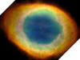
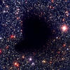
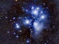

Video
Here is a quick
video overview of the interstellar medim.
Interstellar medium (ISM)
- The interstellar medium (ISM) is the low-density gas and dust between
stars. Astronomers estimate that ISM in the Milky Way Galaxy is equal to
about 15% of the mass contained in stars.
- By mass, 99% of the ISM is gas and 1% is dust. Of the gas in the
ISM, 91% of atoms are hydrogen and 8.9% are helium, with 0.1% being the
heavier atoms. (Atoms heaviezr than hydrogen and helium are sometimes called 'metals' in astronomical parlance). By
mass, this amounts to 70% hydrogen, 28% helium, and 1.5% heavier
elements.
- By terrestrial standards, the ISM density is very low.
- In hot, diffuse regions of the ISM, matter is primarily ionized,
and the density may be as low as 10−4 ions per cm3. In cool, dense
regions of the ISM, matter is primarily in molecular form and
reaches number densities of 106 molecules per cm3, which is
smaller than the density in high-vacuum chambers (where the density
is about 1010 molecules per cm3). For comparison, the number
density of our atmosphere at sea level is roughly 1019 molecules
per cm3.
- The interstellar medium emits, absorbs, and reflects radiation.
- 99% of the interstellar medium consists of very low density gas.
- For a sense of scale, the air we breathe has a density of
approximately 10^19 molecules per cubic centimeter. By contrast, the
lowest density regions of interstellar space contains approximately 0.1
atoms per cubic centimeter.
- The remaining 1% of the interstellar medium consists of dust, made of
carbon, metals, silicates, and ice, and typically less than about 500
nanometers.
- Half the interstellar gas is compressed into only 2% of our galaxy's
volume.
- These relatively high density regions are called clouds or nebulae.
- The densest nebulae can have densities of 10,000 molecules per cubic
centimeter, and sometimes even more. The coolest nebulae can have
temperatures of T = 10 Kelvin (or even less).
- A molecular cloud is a cool, dense interstellar cloud
in which the low temperature allows hydrogen to exist in molecular form.
This is in contrast to other areas of the interstellar medium that contain
predominantly ionized gas.
- Molecular clouds are important because they are the raw material
of stars and planets. The formation of stars occurs exclusively within
molecular clouds. For this reason, a molecular cloud is sometimes called
a stellar nursery,
- When a huge molecular cloud starts to collapse, gravity pulls the
gas toward the cloud's densest regions, which initiates the formation of
multiple stars.
- Less than 1% of all hydrogen in the Milky Way is bound in molecular
clouds. The rest is in the form of atomic hydrogen which can become a
molecular cloud at a later point in time.
-
Video summary of molecular clouds.
The other half of the interstellar gas is spread over the remaining 98% of
the galaxy's volume.
- The lowest density gas has a density of 0.1 atoms per cubic
centimeter (or less). The hottest interstellar gas has a temperature of
8000 Kelvin (or more).
- Our Solar System appear to be located within a large, low-density
bubble within the interstellar medium.
Three types of nebulae
- Nebulae are clouds of gas and dust in space.
- In terms of appearance, the three types of nebulae are emission,
reflection, and dark (absorption).
- Emission nebulae and reflection nebulae are bright nebulae.
- An emission nebula is a hot, ionized cloud, surrounding
a hot, luminous star.
- The gas in the emission nebula is heated by ultraviolet light from
the star, and thus, like all hot, low-density gas, produces an emission
line spectrum.
- A planetary nebula is a type of emission nebula consisting of an
expanding, glowing shell of ionized gas ejected from red giant stars
late in their lives.
- Example: The Orion
Nebula, 1500 light-years away away from us, in the constellation
Orion, is perhaps the most familiar nebula.
- A dark nebula (or absorption nebula) is so dense that
it obscures the visible wavelengths of light from objects behind it.
- A dark nebula is dusty enough to be opaque at
visible wavelengths. Thus, a nearby dark nebula blocks our view of more
distant stars, making it look as if there were a hole
in an otherwise starry sky.
- The dust in a dark nebula, heated by starlight, re-radiates the
light at infrared wavelengths. Thus, a dark nebula is
only dark at visible wavelengths but is quite luminous at infrared
wavelengths.
- Most dark nebulae are associated with, or part of, giant molecular
clouds.
- Example: The Coalsack Nebula is perhaps the most pominent dark
nebula. It is located about 600 light-years away in the constellation of
Crux (Southern Cross). This huge, dusky object forms a conspicuous
silhouette against the bright, starry band of the Milky Way and for this
reason the nebula has been known to people in the Southern Hemisphere
for our entire civilization.
- Example: Barnard 68. Video example of dark nebula
Barnard 68.
- A reflection nebula reflects light from a nearby star.
- Reflection nebulae are chaterestically blue because
they consist of carbon dust, which scatters blue light more efficiently
than red light (similar to our atmosphere).
- The brightness of the nebula is determined by the size and density
of the reflecting grains, and by the color and brightness of the
neighboring star.
- Example: The
Pleiades is a famous star cluster, about 400 light-years away from
us, in the constellation Taurus and surrounded by very blue reflection
nebulae.
-


